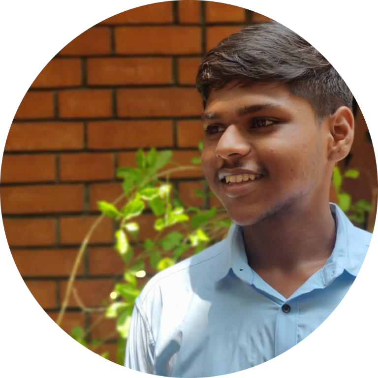

|  |
Manikandan SekarPassionate Software Developer | Analyst at Accenture | Fitness Enthusiast & Transformation Coach |
A passionate Gym Bruh/Software Engineer who loves to inspire people by his work. Always being that guy who wants to learn new stuff every single day and trying to provide value to the space and people around him!